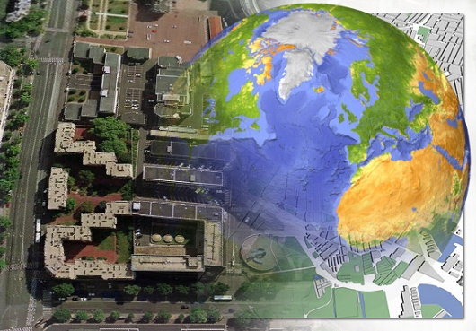

---
---

<link rel="stylesheet" href="http://commbocc.github.io/CDN/css/civic.css">
<link rel="stylesheet" href="http://maxcdn.bootstrapcdn.com/font-awesome/4.3.0/css/font-awesome.min.css">
<script src="https://ajax.googleapis.com/ajax/libs/jquery/1.11.2/jquery.min.js"></script>
<script src="https://maxcdn.bootstrapcdn.com/bootstrap/3.3.2/js/bootstrap.min.js"></script>

<link rel="stylesheet" type="text/css" href="../../css/departments/gis.css">

<div class="bs">

	<div class="row">
		{% for gis in site.data.gis %}
		<div class="col-sm-4">
			<div class="thumbnail">
				<div class="thumb-container">
					<a href="#img_link">
						
					</a>
					<button class="btn btn-primary btn-lg btn-block" type="button" data-toggle="collapse" data-target="#collapse{{gis.name}}" aria-expanded="false" aria-controls="collapse{{gis.name}}">
						{{gis.name}}
					</button>
				</div>
				<div class="caption">

					<div class="collapse" id="collapse{{gis.name}}">
						<p>
							{{gis.about}}
						</p>
						<p>
							<a class="btn btn-info btn-block" href="#link">
								Link
							</a>
						</p>
					</div>

				</div>
			</div>
		</div>
		{% endfor %}
	</div>
	
</div>
